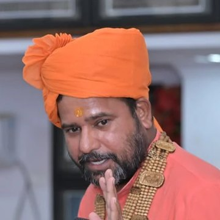
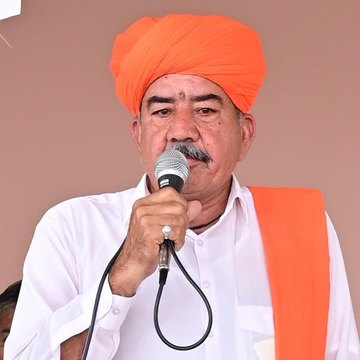
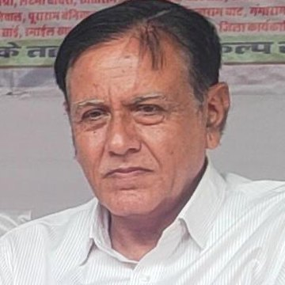
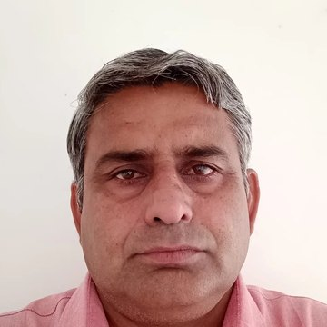
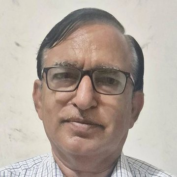
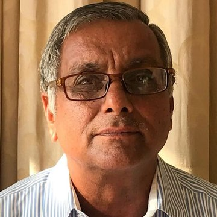
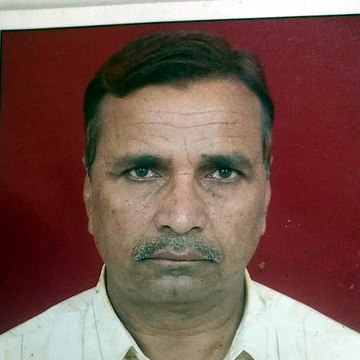
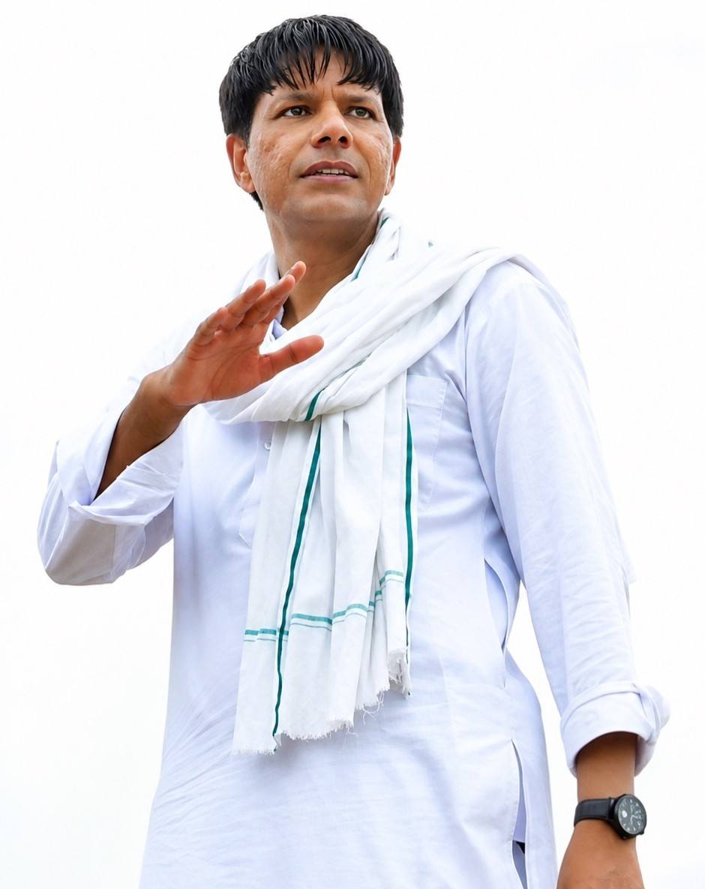

लोकसंकल्प : नशे की सामाजिक स्वीकृति के विरुद्ध जन-आंदोलन
संरक्षक मंडल
शिक्षा, धर्म, पर्यावरण और समाजसेवा से जुड़े नौ साथी
संरक्षक मंडल के सदस्य
लोकसंकल्प को सामाजिक मार्गदर्शन, व्यापक जनभागीदारी एवं निरंतरता प्रदान करने हेतु विभिन्न क्षेत्रों के प्रतिष्ठित एवं प्रतिबद्ध व्यक्तियों का संरक्षक मंडल गठित किया गया है।
-

स्वामी कृपाचार्य जी अध्यक्षचूरू जिले के मौलीसर बड़ा गाँव स्थित बणी धाम के पीठाधीश्वर। प्रखर वक्ता एवं चिंतक हैं, तथा सकारात्मक बदलाव, विशेषकर नशा मुक्त समाज हेतु सक्रिय रूप से कार्यरत हैं।
-

महंत भँवर नाथ जी सिद्ध सदस्यगुरु हँसो जी धाम, लिखमादेसर के महंत। देव जसनाथ जी की पर्यावरण एवं नशा मुक्ति संबंधी शिक्षाओं के प्रचार-प्रसार में मनोयोग से कर्मरत हैं।
-

श्रीमान बना राम जी चौधरी सदस्यपिछले तीन दशकों से शिक्षा एवं समाज उत्थान के क्षेत्र में सक्रिय हैं। वर्तमान में राजस्थान शिक्षक संघ प्रगतिशील के प्रदेशाध्यक्ष हैं।
-
श्रीमान महावीर जी सिहाग सदस्य
पिछले साढ़े तीन दशकों से सार्वजनिक शिक्षा की बेहतरी हेतु अथक प्रयासरत हैं। राजस्थान शिक्षक संघ के सभाध्यक्ष एवं स्कूल टीचर्स फेडरेशन ऑफ़ इंडिया के राष्ट्रीय उपाध्यक्ष के रूप में आपके प्रयासों से सार्वजनिक शिक्षण व्यवस्था में गुणात्मक बदलाव आया है।
-
श्रीमान मोटा राम जी चौधरी सदस्य
पूर्व प्रधानाध्यापक। विगत एक दशक से शिव भवन जाट धर्मार्थ संस्थान, लूनकरणसर के अध्यक्ष के रूप में सामुदायिक उत्थान हेतु सराहनीय योगदान दे रहे हैं।
-

श्रीमान दौलत राम जी सारण सदस्यशिक्षाविद्। जाट विकास परिषद, सरदारशहर के अध्यक्ष के तौर पर ग्रामीण विद्यार्थियों को बेहतर शैक्षिक अवसर प्रदान करने के प्रयासों की अगुवाई कर रहे हैं।
-

श्रीमान मुकंद राम जी नेहरा सदस्यपूर्व प्रधानाचार्य। चार दशक से शैक्षिक उत्थान हेतु समर्पित हैं। जाट बोर्डिंग रतनगढ़ में आपके सक्रिय प्रयासों से हज़ारों विद्यार्थी अब तक लाभान्वित हो चुके हैं।
-

प्रोफ़ेसर एच आर इसरान सदस्यपूर्व प्राचार्य। अंग्रेज़ी विषय के प्रोफ़ेसर के रूप में साढ़े तीन दशक तक उच्च शिक्षा विभाग में उत्कृष्ट सेवाएँ प्रदान कीं। सेवानिवृत्ति के पश्चात् क़रीब एक दशक से ग्रामीण क्षेत्र के विद्यार्थियों के शैक्षिक विकास हेतु सक्रिय रूप से कार्यरत हैं।
-

श्रीमान हरलाल सिंह जी मील सदस्यसेवानिवृत्त जिला वन अधिकारी। पारिस्थितिकी के सूक्ष्म पक्षों का गहरा ज्ञान रखते हैं। पर्यावरणीय बेहतरी के साथ-साथ सामाजिक सुधार के लिए भी निरंतर प्रयासरत हैं।
प्रणेता एवं संयोजक
प्रो. श्यामसुंदर ज्याणी
एसोसिएट प्रोफ़ेसर, समाजशास्त्र
राजकीय डूंगर महाविद्यालय, बीकानेर

शिक्षक, समाजशास्त्री और पर्यावरणविद् प्रो. श्यामसुंदर ज्याणी पिछले दो दशकों से समुदाय आधारित सामाजिक एवं पर्यावरणीय बदलाव के लिए कार्यरत हैं। उनके द्वारा विकसित ‘पारिवारिक वानिकी’ (Familial Forestry) की अवधारणा ने पर्यावरण संरक्षण को परिवार, सामाजिक-सांस्कृतिक मूल्यों और जनभागीदारी से जोड़ते हुए व्यापक जन-अभियान का स्वरूप लिया।
उनके नेतृत्व में उत्तर-पश्चिमी राजस्थान सहित विभिन्न क्षेत्रों में 50 लाख से अधिक पौधों का रोपण, 200 से अधिक संस्थागत वनों का विकास, तथा बीकानेर जिले में देव जसनाथ जी की अवतरण स्थली डाबला तालाब की 207 एकड़ बंजर सामुदायिक भूमि का, जसनाथी समुदाय की सक्रिय सहभागिता के जरिए, पारिस्थितिक पुनर्स्थापन किया गया है।
सतत भूमि प्रबंधन में उनके योगदान के लिए उन्हें संयुक्त राष्ट्र द्वारा प्रतिष्ठित ‘Land for Life Award 2021’ से सम्मानित किया गया। वे UNCCD COP15, Abidjan (2022) तथा COP16, Riyadh (2024) में संयुक्त राष्ट्र के विशिष्ट अतिथि के रूप में सहभागी रहे हैं। समुदाय विकास में योगदान के लिए उन्हें भारत के माननीय राष्ट्रपति द्वारा राष्ट्रीय पुरस्कार प्रदान किया जा चुका है। 15 अगस्त 2025 को उन्हें राष्ट्रपति भवन में आयोजित एट होम समारोह में आमंत्रित किया गया।
प्रो. ज्याणी Nature Positive Universities Network से भी जुड़े हैं, जो University of Oxford और United Nations Environment Programme (UNEP) की साझा पहल है। नेटवर्क ने सततता के क्षेत्र में उनके योगदान को मान्यता देते हुए उन्हें Staff Champion के रूप में भी मान्यता प्रदान की है।
पर्यावरण संरक्षण में समुदाय को बदलाव का वाहक बनाने के इसी दीर्घ अनुभव को सामाजिक क्षेत्र में आगे बढ़ाते हुए प्रो. ज्याणी ने अगस्त 2026 में, नई किरण नशा मुक्ति केंद्र, राजकीय डूंगर महाविद्यालय, बीकानेर के संयोजक के नाते, ‘लोकसंकल्प : नशे की सामाजिक स्वीकृति के विरुद्ध जन-आंदोलन’ की परिकल्पना की और शिक्षक दिवस पर 5 सितम्बर 2026 को इसे क्रियान्वित किया। इसका उद्देश्य नशे की समस्या को केवल व्यक्ति की लत तक सीमित न मानकर, परिवार, शिक्षक, विद्यार्थी और समुदाय की सहभागिता से नशे की सामाजिक स्वीकृति को चुनौती देना और नशा मुक्त समाज के लिए जन-संकल्प खड़ा करना है।
प्रणेता का ध्येय वाक्य
पर्यावरण हो या समाज, स्थायी बदलाव तभी संभव है, जब समुदाय स्वयं बदलाव का वाहक बने।प्रो. श्यामसुंदर ज्याणी, प्रणेता एवं संयोजक
आप भी जुड़िए
यह अभियान लोगों से बनता है
अपने गाँव, वार्ड और विद्यालय में भी यह संदेश पहुँचाइए। एक संकल्प से दस संकल्प बनते हैं।